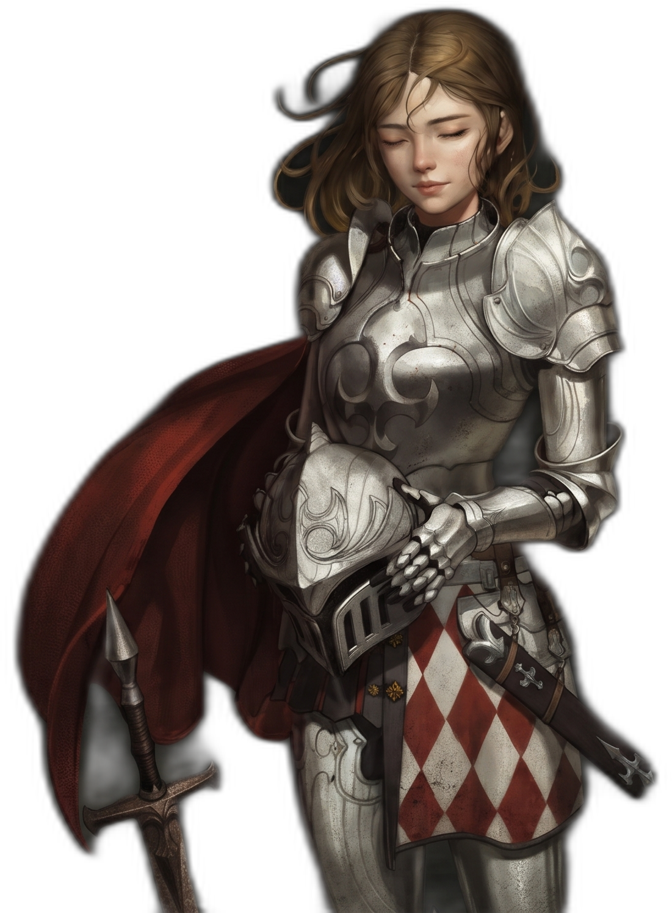
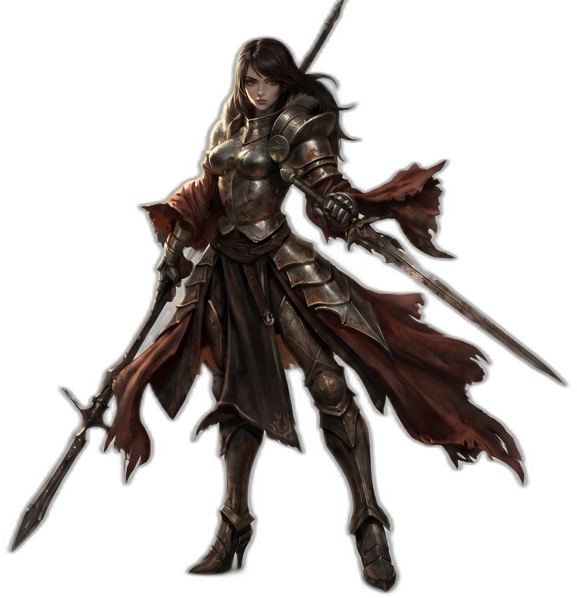

Eve
A garota desacreditada que virou capitã de elite em Lotun.
Surgimento de Eve

Em meio às chamas e aos ossos de dragões, nasceu uma garota com o coração inflamado por lendas. Eve, filha de uma curandeira e criada nas margens do Reino de Lotun, cresceu ouvindo histórias sussurradas entre guerreiros: de combates impossíveis, de soldados que riam diante de bestas aladas, de espadas forjadas com os espinhos dos próprios inimigos.
Ela não queria apenas ouvir essas histórias.
Ela queria ser uma.
Desde criança, observava os treinamentos dos soldados de Lotun escondida atrás das pedras, com olhos famintos por coragem. Via ferreiros forjarem armas com marteladas que soavam como tambores de guerra, faíscas dançando como fogo vivo.
Mas sabiam todos: nenhuma arma perfura a escama de um dragão… a menos que venha dele.
A Forja Proibida
Após um novo ataque de dragões às bordas de Lotun, Eve ignorou os avisos e saiu sozinha em direção às carcaças deixadas pela batalha. Não tinha treinamento. Não tinha permissão. Mas tinha fome de conquista.
Ali, entre os ossos fumegantes e o cheiro de enxofre, ela escolheu seu troféu: um espinho ainda quente, arrancado da pata de um dragão.
Sem saber forjar, ela passou dias apenas observando os mestres. À noite, repetia os gestos no escuro, queimando os dedos, errando golpes, afiando a vontade. No quarto dia, com as mãos em carne viva, ela forjou sua primeira lâmina.
Tão pesada que fez o chão vibrar.
Tão leve que parecia parte de si.
Experiência na Batalha

Quando os três reinos — Irus, Kheltan e Lotun — se uniram para atacar um território de dragões vermelhos, Eve se infiltrou entre os soldados da linha de frente de Kheltan. Ali, entre lanças brutais e escudos como muralhas, ela viu um cavaleiro diferente.
Armadura negra como carvão.
Capa feita da pele das asas de um dragão.
Sem lanças. Menor que todos no local.
Apenas silêncio.
Ele não a intimidou. Mas nunca mais saiu da sua memória.
Durante o ataque, uma explosão jogou Eve contra uma rocha. Ficou paralisada. Sozinha. Com medo. Ouviu seu coração bater como tambores de um fim inevitável. O dragão avançava. Ela não podia se mover.
E então — o monstro foi arrancado do chão e lançado contra uma montanha. Não por exércitos. Mas por aquele cavaleiro sombrio.
Eve ouviu soldados gritando, rindo, mesmo cercados por morte. Algo dentro dela se acendeu. Ela se levantou. Respirou fundo. Agarrou sua arma. Correu. Pisou nas costas de um companheiro e pulou direto na boca do dragão. Lá dentro, gritou. E cortou. Da garganta à mente. Saiu coberta de sangue e segurando uma escama arrancada da cabeça da fera.
Passou um ano lutando. Um ano caçando. Um ano vencendo. A garota desacreditada tornou-se capitã de uma divisão de elite em Lotun. Aqueles que riam dela agora esperam suas ordens em silêncio.
Mas Eve, mesmo com espadas novas e escamas velhas… ainda quer respostas. Ainda deseja encontrar aquele cavaleiro. Aquele que desafiou um dragão com o olhar. E fez os céus tremerem com o silêncio.
A Ascensão de Eve
Após a grande guerra, dois anos se passaram e Eve foi convocada pelos seus superiores a ajudar no conflito que estava prestes a acontecer no Centro. Após anos treinando e batalhando apenas contra dragões, a mesma queria algo mais interessante.
Eve teria um papel fundamental na grande guerra, porém para isso necessitaria de um treinamento muito intenso. E foi lá, em Gantro, que Eve desenvolveu habilidades de manipulador.
A jornada apenas começou.